Puttu and kadala, steamed rice cake and black chickpea curry is every malayali's seoul food. There is no strict ways to at Puttu, but Kadala is one of the most iconic combination.
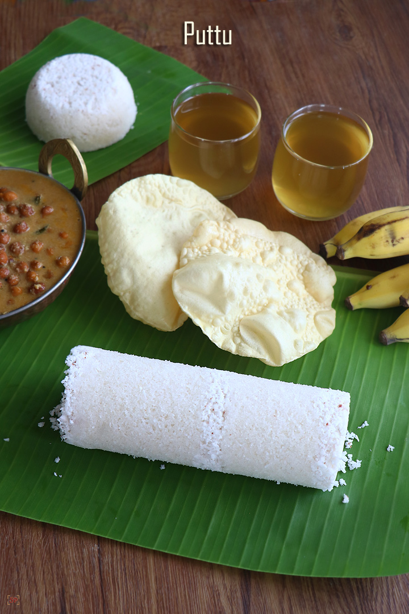
Puttu and kadala, steamed rice cake and black chickpea curry is a breakfast I grown up eating at home. It is a Kerala traditional cuisine and a famous breakfast in every houshold in Kerala. It is paired with alot of different sides, like chickpea curry, papadam, chicken or beef curry, milk, sugar and my favorite banana.
Puttu is a nutritious and one of the healthiest breakfast that abound with an impressive nutrient profile and health benefits, it is made of steamed cylinders of tasty crumbly ground rice flour layered with a generous amount of coconut shavings. Puttu is a traditional & popular breakfast of Kerala and commonly relished with Kadala Curry.
Kadala Curry is a tasty, lovely gravy made by cooking kadala (black chana) with tempered spices, onion & tomato. Kadala Curry is a popular Kerala cuisine dish relished as an accompaniment for Puttu and can be had with rice & tiffin as well.
Puttu Ingredients
Rice Flour:
You can use homemade rice flour or if you are making rice flour just for puttu, grind it coarsely. Store bought Puttu Podi / Puttu Flour or rice flour is also good for making puttu.
Coconut :
Fresh grated coconut is recommended for this recipe though we can use desiccated coconut. Scrap the white fleshy part of coconut without brown part for better taste.
Sweetner:
Sugar / Cane Sugar / Powdered Jaggery is used as an additional side for puttu and not involved in the making of puttu.
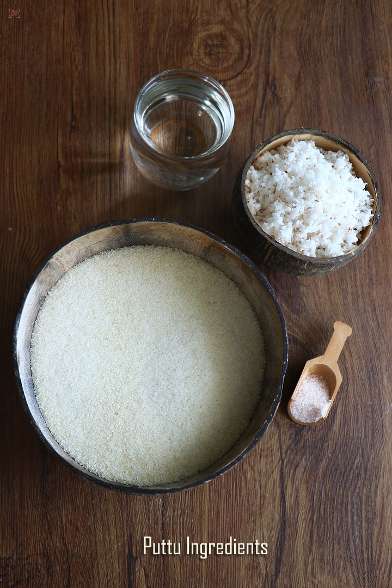
Puttu Instructions
Method 1 :
Method most used by students as its easier and the container is small and enough for a single person.
To a mixing bowl : Add 2 cups puttu flour, 2 tbsp coconut and salt to taste.
Mix this well first. Add water little by little totally you may around 1.5 cups.
Keep adding water and keep mixing until you get a slightly wet crumbly mixture like this. If you hold and see it should hold its shape. It should not fall apart on its own.
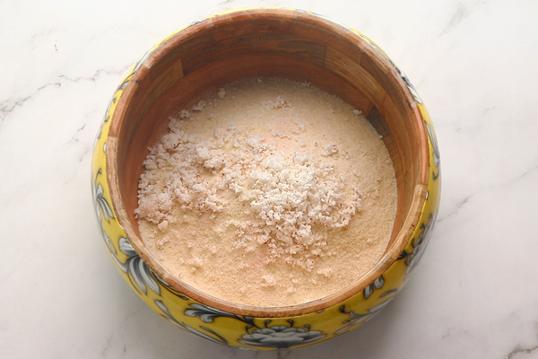
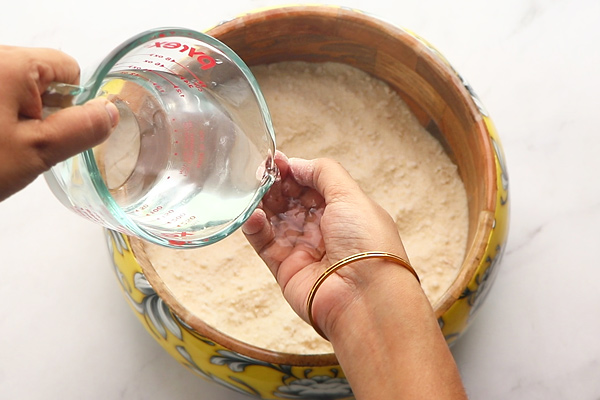
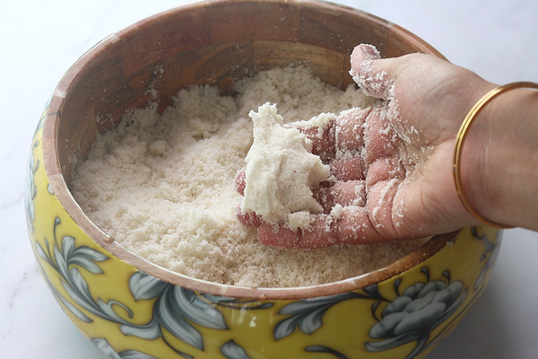
And when you press it slightly it should crumble easily, we call this 'pidicha pidikanum vita uthuranum' in tamil.
This is the perfect consistency. Puttu flour ready.
This method is using the cherati puttu maker. Place the plate inside the puttu maker first.
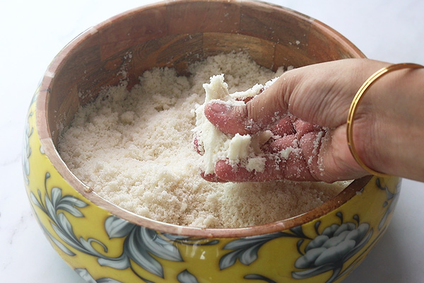
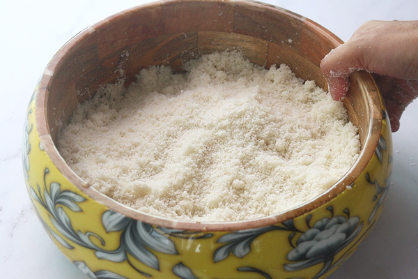
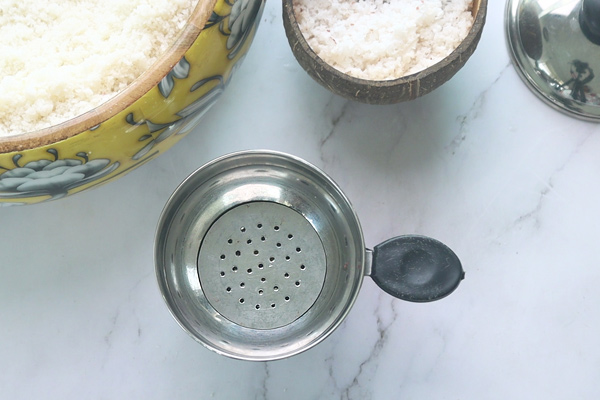
Add 2 tbsp coconut to the puttu maker, slight pat it.
Add puttu flour till almost 3/4th of the puttu maker. Slightly press it without applying too much pressure. Close with lid and set aside.
Add water to pressure cooker, let it boil.
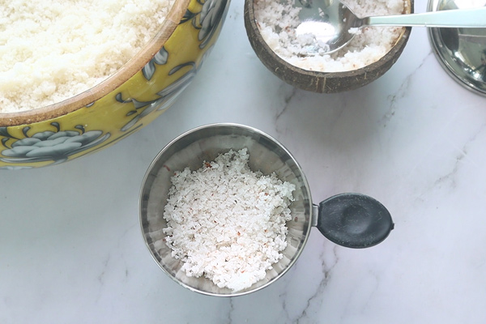
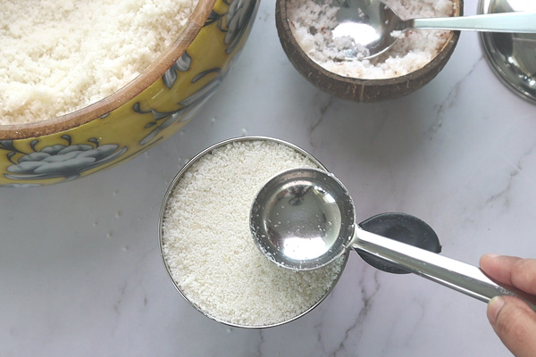
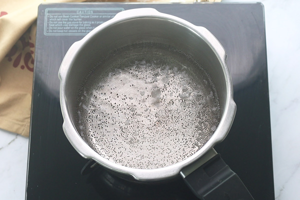
Close with lid no whistle needed. Cook until steam starts to come out.
Now place the puttu maker over it. Cook for 3-5 mins or until steam escapes through the holes, this indicates the puttu is cooked. Switch off and remove.
Remove, open the lid and gently invert.
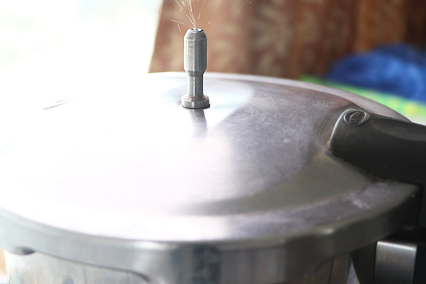
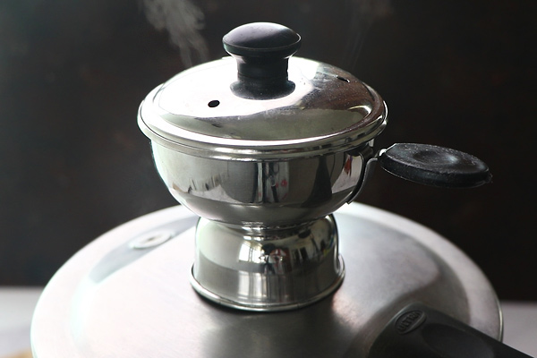
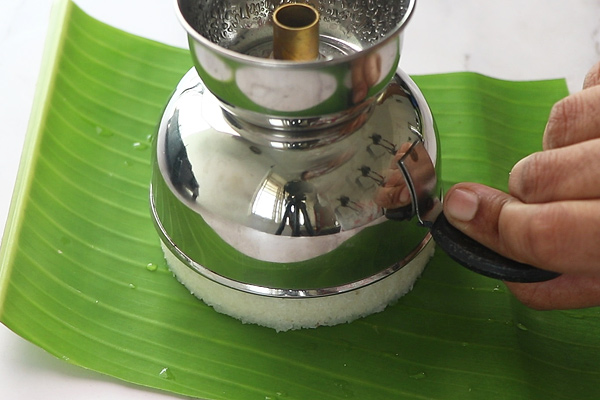
Cherati puttu ready.
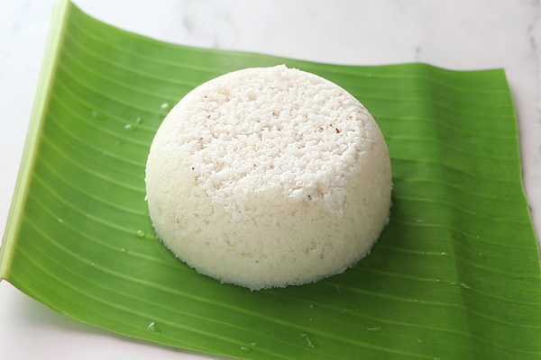
Kadala Curry Ingredients
To Mix:
3/4 cup black chana
5 small onion
2 medium sized tomatoes chopped roughly
1 tsp red chilli powder
1.5 tsp coriander powder
1/2 tsp garam masala powder
1 tsp oil
1 tsp oil
salt to taste
To Roast and Grind:
1/2 cup coconut
2 red chillies
1 tbsp coriander seeds
To Temper:
2 tsp oil
1 tsp mustard seeds
a sprig curry leaves
1/2 tsp jeera
5 small onion optional
Kadala Curry Instructions
Soak black chana overnight and pressure cook for 6-7 whistles or until soft. Don't drain water, set aside.
In a pressure cooker heat oil then add tomatoes and onions, fry till mushy and the raw smell of tomatoes leaves.Then add red chilli powder, coriander powder and garam masala powders.
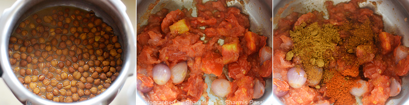
Fry till the raw smell of spice powders leave, add required salt then add chana along with water. pressure cook it for 1 whistle(this step is purely optional) – but I recommend doing so as it makes the chana soft and blend with the masalas well.
Heat a pan and add the ingredients listed under the ‘to roast & grind’.
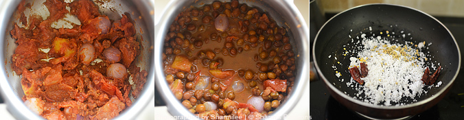
Roast till nicely browned or a darker shade. Then transfer it to a mixer, add little water and grind to a smooth paste.
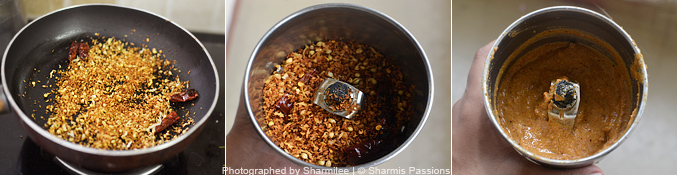
Add the paste to the gravy (add water it its too thick)and let it boil for 3mins. Then heat oil in spice heating pan. Add the items listed under ‘to temper’ let it splutter. Fry till onions turn golden brown.
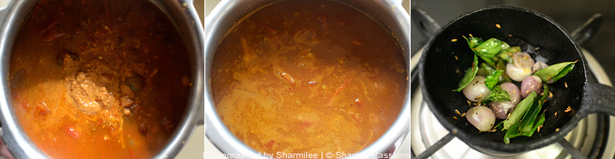
Add the spices to the gravy – I transferred it to the pan at this stage as I needed my pressure cooker for making the puttu :). Add salt according to taste. Allow it to boil till the curry thickens to the desired consistency. Switch it off. Serve Kadala Curry hot with puttus.
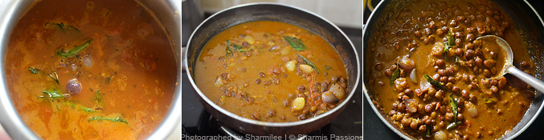
Recipe Card
Ingredients
Instructions
To a mixing bowl : Add 2 cups puttu flour, 2 tbsp coconut and salt to taste.
Mix this well first. Add water little by little totally you may around 1.5 cups.
Keep adding water and keep mixing until you get a slightly wet crumbly mixture like this.
This method is using the cherati puttu maker. Place the plate inside the puttu maker first.
Add 2 tbsp coconut to the puttu maker, slight pat it.
Add puttu flour till almost 3/4th of the puttu maker. Slightly press it without applying too much pressure. Close with lid and set aside.
Add water to pressure cooker, let it boil.
Close with lid no whistle needed. Cook until steam starts to come out.
Now place the puttu maker over it. Cook for 3-5 mins or until steam escapes through the holes, this indicates the puttu is cooked. Switch off and remove.
Remove, open the lid and gently invert. The Puttu is Ready.